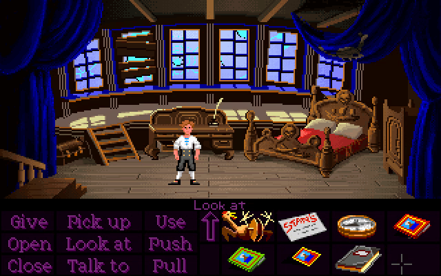
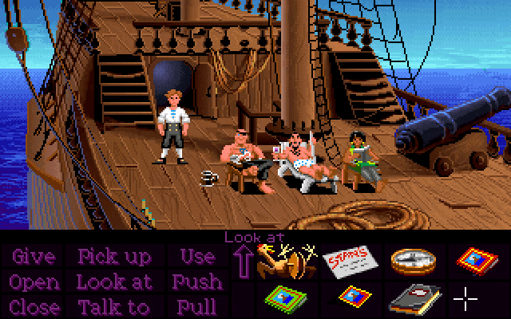
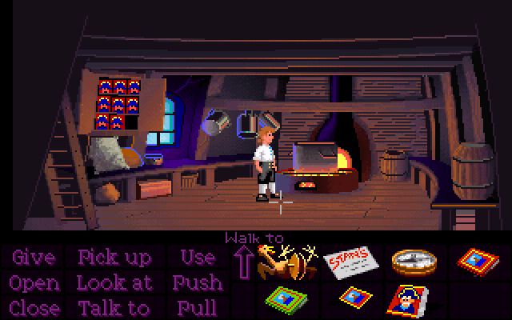
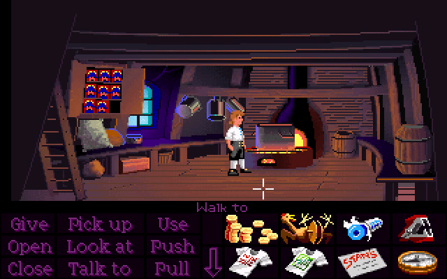
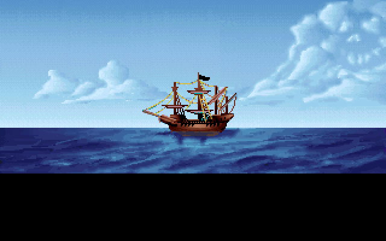
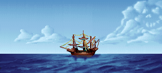
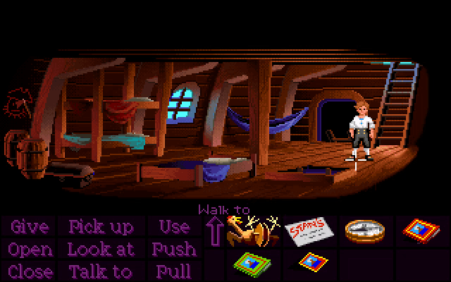
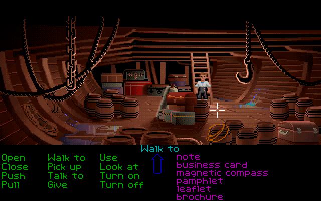
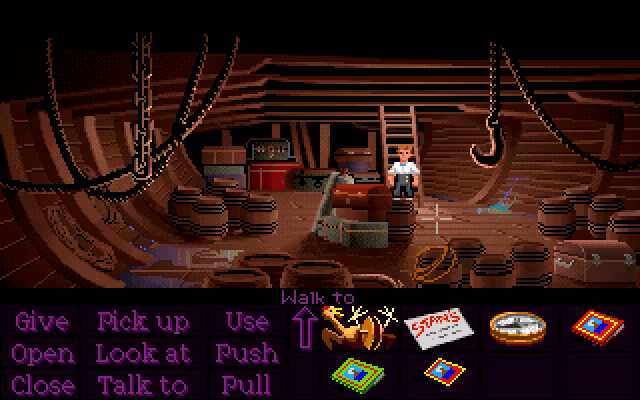

If you read the journal while standing in the Captain's cabin, a bookmark will appear in your inventory.

However, if you read the book anywhere else on the ship, you won't get the bookmark!

The main thing we'll be doing in Part 2 is making a potion to get to Monkey Island. The recipe requires that the following items be added to the soup:
cinnamon sticks breath mints jolly roger ink fine wine rubber chicken gunpowder cereal
We'll also need to burn something in the fire to create a "flaming mass" for later. The following items are burnable:
feather pen both t-shirts dusty book yellow petal map business cards cereal
The cereal is unique in that it's both a burnable item and a necessary potion ingredient, which seems like it could cause an obvious problem. The game actually does stop you from burning the cereal before you've gotten the key out of it, but it doesn't check whether or not you've added it to the soup. This means if you get the key and then burn the cereal before adding it, you'll be softlocked.

We've gone over the eight items that need to be added to the soup, but those aren't the only things that can be added. Once you have the recipe from the cabinet, the game will actually let you throw anything into the soup, except for the following items:
pieces of eight rope magnetic compass leaflet brochure pamphlet flaming mass pot map
What this means is that nearly every burnable item can be thrown into the soup instead, which could potentially leave us in a tricky situation if we end up with nothing to burn.
The map is a potential safety net, since Guybrush will burn it but won't put it in the soup - except it's entirely possible to get through Part 1 without ever buying it if you find the treasure on your own.
So what about the cereal, then? It's burnable, and adding it to the soup doesn't consume it, so surely we can always at least fall back on that as a last resort?
Well, I actually lied a tiny bit when I said that the game prevents you from burning it before you've opened it to get the key. What actually happens is that the game prevents you from burning it unless the key is currently in your inventory, which means that if you decide to put the key in the soup, then you can no longer burn the cereal.
All together, this means that if we complete Part 1 without buying the map, then throw every burnable item and the key into the soup, we will also be softlocked, this time due to having nothing that we can burn.

The fact that the cereal is programmed in a way that allows for two completely separate ways to softlock yourself makes it possibly the most broken item in the game.
The wide shot of the Sea Monkey contains a continuity error. The Jolly Roger is present both before and after Guybrush has taken it to make the potion.

The flag is actually an actor, with the raw background containing only the flagless ship. This means that the game could very easily hide or show the flag to maintain continuity with whether or not it's been taken, but doesn't.

In the EGA version, there is an unused variation of the Captain's cabinet with an empty red interior.
No art exists for the red interior with the chest inside.
There's some unused dialogue that would have triggered upon entering the hold for the first time, in which Guybrush complains about the ship smelling like monkeys:
"Yech!!! The unmistakable stench of Monkeys!!! This whole ship smells like hot, sweaty primates. I knew I should have taken it for a test sail."

The Sea Monkey's hold has water leaking in from two different spots. In the floppy versions, these two spots animate very rapidly, while in the CD version, these animations have been slowed down enormously.


The reason might have to do with the drip sound effects, which play at the same rate as the animations. The floppy versions play a simple MIDI "bloop" sound extremely rapidly, creating a sort of "bubbling" noise, while the CD version uses higher-quality dripping and splishing sounds which may not have sounded right (or worked at all) when played rapidly.